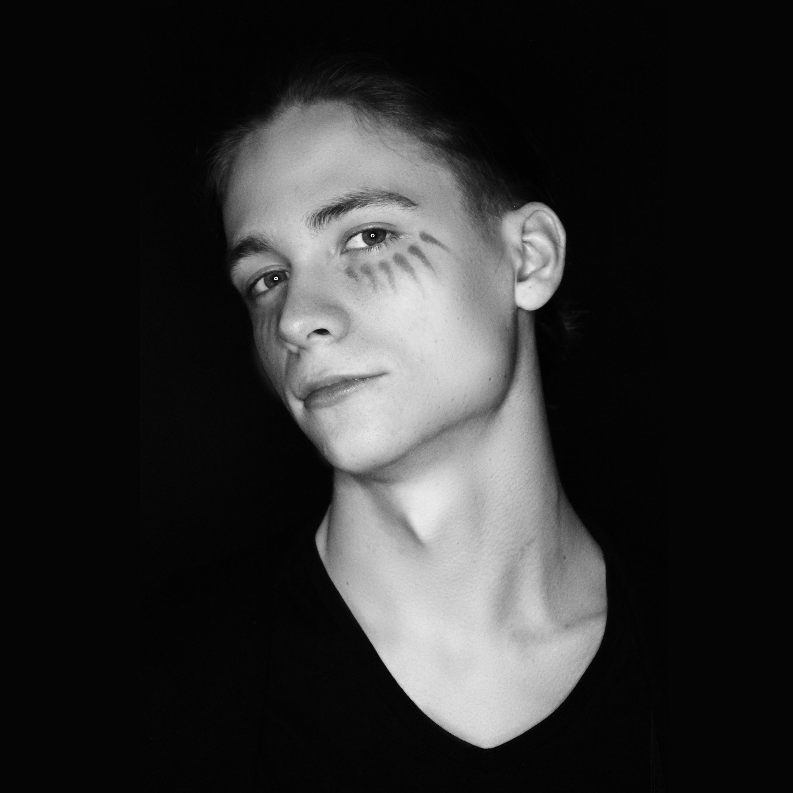

Collegium Da Vinci (od 2023, studia licencjackie, w trakcie)
Zespół Szkół Zawodowych i Ogólnoszkształcących im. Kombatantów Ziemi Lubańskiej w Lubaniu (2018–2022)
I am a Unity Developer, focused on the solid technical side of production. In Unity, I implement mechanics and gameplay systems and build tools that speed up the team's work and organize the process. In parallel, I develop the visual side: I prepare environments, lighting, and post-processing to improve the visual quality and readability of the game. My strength is my attention to code quality, scalability, and optimization. In the future, I want to develop as a Unity Developer in 2D and 3D projects and expand my technical skills.
I worked on the game for the interactive table, implementing gameplay logic and a touch interaction system with recognition of physical tokens based on touchpoints with the screen. I was also responsible for asset integration and visual design, including VFX effects and post-processing.
I worked on two projects: Turbo Tire, where I created 3D models, prepared UV maps, and developed shaders, post-processing, and VFX effects. In the Purrrifiers: Cleaning Chaos DEMO project, I developed the main stain cleaning system using C#, compute shaders and shaders supporting workflow, as well as creating and integrating VFX and post-processing.
I created and hosted websites in PHP. I also supported database management and environmental maintenance work.